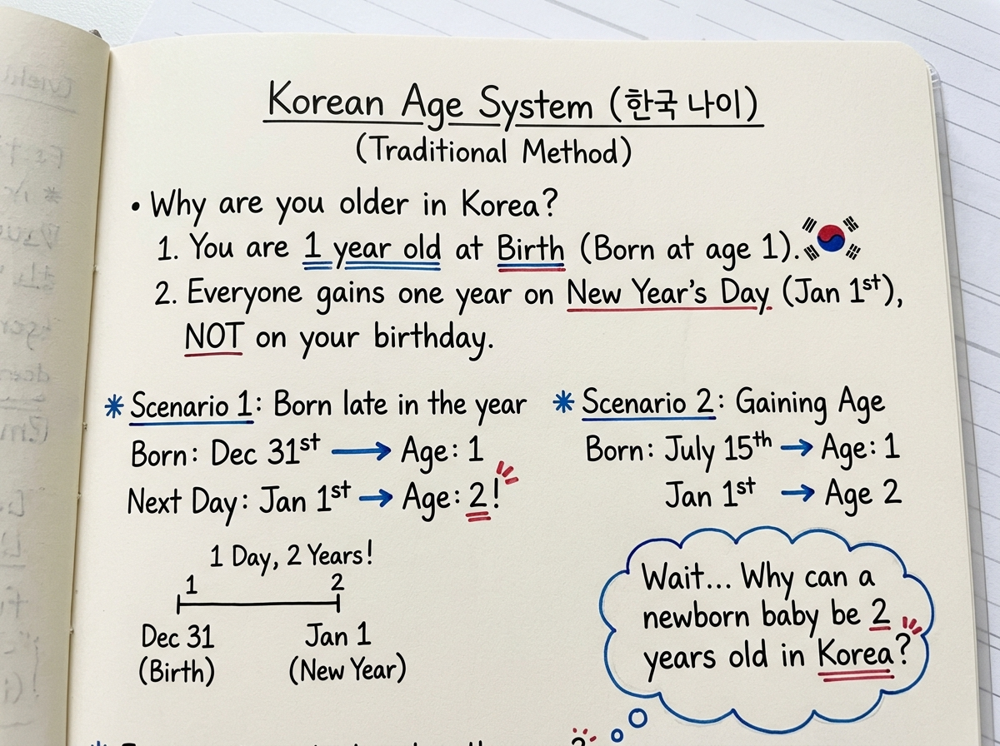

What Is Korean Age?
The traditional Korean age system counts a newborn as one year old at birth and traditionally adds one year to everyone's age on January 1st. This means a person's traditional Korean age could be one or two years higher than their international calendar age.
This distinction is critical for official paperwork: South Korea formally adopted the international full-age system (만 나이 - Man Na-i) for all legal, administrative, and medical documents on June 28, 2023. The traditional count remains purely cultural and conversational.
Korean Age at a Glance
To understand why Korean age produces numbers that diverge from Western birthdays, compare the fundamental mechanics of the three reckoning models side-by-side:
Starts at 1 on delivery day; everyone increments together every January 1st.
Starts at 0; increments strictly on your individual calendar birthday.
Under traditional reckoning, New Year's Day triggers age increase, not birthdays.
Administrative Context: The traditional counting method is now primarily an informal cultural convention. South Korea's official civic administration, passports, employment contracts, and healthcare networks operate strictly on international completed-age reckoning.
How Does the Korean Age System Work?
Rather than treating age as a continuous stop-watch measuring elapsed seconds from birth, traditional Korean culture conceptualizes age as an ordinal counter of calendar years during which you have lived. The system operates on three clear rules:
The moment an infant takes their first breath, they are considered to be in their first year of life (accounting for prenatal gestation in the womb).
When the calendar year flips to January 1st, every person in society gains one year of life together, regardless of their personal birth month.
Your birthday is a beloved family celebration with seaweed soup (miyeok-guk), but it does not increment your traditional Korean age.
Korean Age Timeline Example: The December 31 Baby
The interaction between starting at age 1 and aging on January 1st leads to the famous scenario where a newborn baby can become "two years old" in just two days of life. Consider a baby born on December 31, 2025:
The 48-Hour Progression:
- December 31, 2025 (Birth): The infant is delivered into the world. Traditional Korean age = 1 year old (International age = 0 days old).
- January 1, 2026 (New Year's Day): Exactly 24 hours later, the calendar advances. Everyone gains +1 year. Traditional Korean age = 2 years old (International age = 1 day old).
- December 31, 2026 (First Birthday): One full year after delivery, the infant completes their first international year. International age = 1 year old (Traditional Korean age remains 2 years old).
The official South Korean government explanation mirrors this exact distinction: traditional Korean age (세는나이 - Seneun Na-i) counts calendar years experienced, whereas full age (만 나이 - Man Na-i) measures completed solar anniversaries.

How Is Traditional Korean Age Calculated?
Because traditional Korean age depends strictly on the calendar year rather than the individual calendar day, you do not need the person's exact day of birth to compute their traditional count. The mathematical equation is remarkably simple:
Korean Age = Current Year − Birth Year + 1
Looking for step-by-step arithmetic? Read our practical walkthrough: How to Calculate Korean Age: Formula, Examples & Calculator →
Korean Age vs International Age
Full comparative breakdown: For an in-depth analysis of 1-year vs 2-year gaps, birthday timing, and December 31 anomalies, read: Korean Age vs International Age: What’s the Difference? →
The differences between traditional Korean age and the international standard involve when counting begins, when age increments, and how legal institutions interpret the resulting number:
| Feature / Aspect | Traditional Korean Age (세는나이) | International Age (만 나이) |
|---|---|---|
| Age at Birth | 1 year old | 0 years old (counted in days and months) |
| When Age Increases | January 1st (Solar New Year) | Exact calendar date of birth |
| Uses Exact Birthday? | No (calculated from birth year alone) | Yes (requires completed birthday anniversary) |
| Typical Difference | +1 or +2 years higher | Baseline global standard (0 gap) |
| Official Legal Standard in Korea | No (informal / cultural only) | Yes (standardized since June 28, 2023) |

Korean Age Examples
To see how the gap fluctuates between 1 and 2 years depending on the current date, observe these three real-world examples evaluated in calendar year 2026:
Case A: Born January 1, 1995
Because their birthday falls on the exact day traditional age increments, their gap remains 1 year throughout the entire year.
Case B: Born June 15, 1995
From January through June 14, Korean age is 2 years higher. On June 15, their birthday passes, narrowing the gap to 1 year.
Case C: Born December 31, 1995
Because their birthday falls on the final day of the calendar year, their Korean age is 2 years ahead for almost all 365 days.
Why Is Korean Age Different?
The traditional Korean age system did not originate arbitrarily; it arose from ancient East Asian philosophical models of cosmology, embryology, and social cohesion. Four core elements explain its unique structure:
- Embryological Gestation: Ancient East Asian cultures recognized that human life does not begin in a void at the moment of birth. The roughly 280 days of intrauterine gestation were counted as the infant's first year of living, so a baby arrived into the physical world already having completed Year 1.
- Collective Social Cohorts: In traditional agrarian society, seasonal agricultural cycles and collective community solidarity were paramount. Everyone advancing a year together on New Year's Day ensured that entire birth cohorts remained social equals, removing ambiguity about age ranks.
- Linguistic Etiquette & Confucian Honorifics: The Korean language features a sophisticated hierarchical grammar system. Using formal deferential speech (존댓말 - jondaenmal) versus intimate casual speech (반말 - banmal) requires knowing whether someone is older, younger, or a same-age peer (친구 - chingu). A shared birth year establishes instant clarity.
- Historical Lunar Reckoning: Historically, Korean age followed the Lunar New Year (Seollal - 설날) rather than the Gregorian January 1st. In modern times, the date of transition shifted to the solar January 1st, but the underlying collective principle endured.
To explore the exact arithmetic step-by-step for your own birth date, try our companion tool: Open Korean Age Calculator.
The Different Age Systems Used in Korea
One of the largest sources of confusion for foreigners and Koreans alike was that South Korea did not have just one age system—it historically utilized three distinct age reckonings simultaneously:
Completed calendar years since birth date. South Korea's official standard for all administrative, civil, and medical paperwork since June 28, 2023.
The historic counting method used in colloquial conversations, K-dramas, family gatherings, and determining social honorific etiquette.
Starts at 0 at birth and increases on Jan 1st. Preserved for military conscription draft physicals and the Youth Protection Act.
Did South Korea Stop Using Korean Age?
Yes, for all official legal and administrative purposes. On June 28, 2023, South Korea enacted historic amendments to the Civil Act and the General Act on Public Administration, legally abolishing traditional Korean age in government documents and standardizing on the International Full-Age (만 나이) system.
The transition was championed by President Yoon Suk Yeol's administration to resolve deep-seated legal friction, administrative waste, and public confusion. Prior to the reform, disputes routinely erupted over medical dosage instructions, pension qualifications, employment retirement contracts, and insurance payouts.
South Koreans juggled Full Age on passports, Year Age for military service, and Traditional Age in conversation, creating cross-border confusion and contractual disputes.
The South Korean parliament overwhelmingly voted to amend the Civil Act to mandate international completed age as the universal administrative baseline.
Government agencies, hospital records, civil contracts, school registration, and court cases standardized exclusively to completed calendar age (만 나이).
International age governs all legal rights and duties. However, traditional age remains alive culturally in determining informal social hierarchy and honorific speech.
What Is My Korean Age Right Now?
The easiest way to find your exact traditional Korean age and see how it compares to your international calendar age is to use our free calculation engine. Enter your birth date to see your 3-system breakdown instantly.
Korean Age Chart (2026 Reference Table)
Use this reference table to find your traditional Korean age, Year Age, and international age based on your birth year during the calendar year 2026:
| Birth Year | Traditional Korean Age (세는나이)* | Year Age (연 나이) | International Age in 2026 |
|---|---|---|---|
| 1990 | 37 세 | 36 | 35 or 36 |
| 1995 | 32 세 | 31 | 30 or 31 |
| 2000 | 27 세 | 26 | 25 or 26 |
| 2005 | 22 세 | 21 | 20 or 21 |
| 2010 | 17 세 | 16 | 15 or 16 |
| 2015 | 12 세 | 11 | 10 or 11 |
| 2020 | 7 세 | 6 | 5 or 6 |
2026 − Birth Year + 1. For any other birth year, visit our Full Interactive Birth Year Matrix.
3 Things to Remember About Korean Age
Born = 1 Year Old
Traditional East Asian reckoning credits the 9 to 10 months of prenatal gestation as your opening year of existence.
January 1st = +1 Year
Traditional Korean age increases collectively on New Year's Day across society, not on your personal birthday.
2023 = Full Age Law
South Korea officially enacted the International Full-Age standard for all government, judicial, and healthcare records on June 28, 2023.
Common Misconceptions About Korean Age
Because the system diverges so noticeably from Western calendar standards, international observers frequently hold common misunderstandings:
Myth 1: "Every Korean is always exactly two years older."
Reality: Not always. The gap fluctuates between 1 and 2 years depending on the current date and your birthday. After your birthday passes in a calendar year, your traditional Korean age is only 1 year greater than your international age. It is 2 years greater only before your birthday arrives in that year.
Myth 2: "Korean age is still the official legal age in South Korea."
Reality: No. South Korea's official administration, healthcare providers, banking institutions, and courts standardized completely to the international completed-age system on June 28, 2023. Traditional age is now an informal cultural convention.
Myth 3: "Korean age increases on your birthday."
Reality: Under traditional counting, birthdays do not trigger an age increase. Age increments simultaneously for all citizens on January 1st. Birthdays are celebrated socially with seaweed soup and cake, but the number remains unchanged until the next New Year.
Frequently Asked Questions About Korean Age
What is Korean age?
Korean age refers to a traditional East Asian method of age reckoning where a baby is considered one year old at birth and everyone collectively gains a year on January 1st rather than on individual birthdays.
How does Korean age work?
Traditional Korean age counts the calendar years in which you have lived. You begin at age 1 at delivery to honor gestational life, and you increment by +1 year each New Year's Day (January 1st).
Are you 1 year old when you are born in Korea?
Yes, under traditional reckoning, a newborn is 1 year old at birth. This cultural custom recognizes the prenatal gestational period in the womb as the child's opening year of life.
Why is Korean age different from international age?
International age measures elapsed time in completed years starting from 0 on your birth date. Traditional Korean age starts at 1 and increases on January 1st, meaning you are typically 1 or 2 years older.
How do you calculate Korean age?
The traditional formula is: Korean Age = (Current Year − Birth Year) + 1. For example, in 2026, a person born in 2000 is 2026 − 2000 + 1 = 27 years old in Korean age.
Does Korean age increase on January 1?
Yes. In traditional Korean counting, everyone's age increases simultaneously on January 1st. While personal birthdays are celebrated with friends and family, they do not change traditional Korean age.
Is Korean age still officially used in South Korea?
No. On June 28, 2023, South Korea officially adopted the international age system for administrative, legal, and governmental documents. Traditional age is now used informally and socially.
Why can Korean age be two years older?
If your birthday has not yet occurred in the current calendar year, you are 2 years older in Korean age: you received 1 year at birth, gained another on January 1st, while your international age has not yet incremented.
What is the difference between Korean age and international age?
The difference ranges from 1 to 2 years. After your birthday passes in a calendar year, Korean age is 1 year higher. Before your birthday arrives in that year, Korean age is 2 years higher.
Did South Korea change its age system?
Yes. South Korea passed legislation amending the Civil Act and General Act on Public Administration on June 28, 2023, officially standardizing contracts, healthcare, and civil procedures to international age.
Find Your Korean Age
Enter your date of birth to instantly discover your traditional Korean age, international age, personal milestone timeline, and cultural relationship title.
🇰🇷 Calculate Korean Age Now →